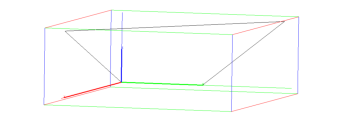

14.8.5 Arbitrary quadrilaterals in space: quadrilateral
See Section 13.9.5 for quadrilaterals in the plane.
The quadrilateral command creates arbitrary quadrilaterals.
-
quadrilateral takes four arguments:
A,B,C,D, four points.
- quadrilateral(A,B,C,D) returns and draws
quadrilateral ABCD.
Example
Input:
quadrilateral(point(0,0,0),point(0,1,0),point(0,2,2),point(1,0,2))
Output:
